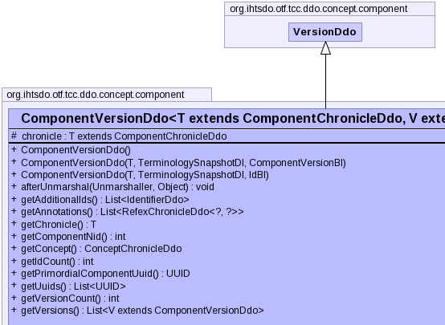

- java.lang.Object
-
- org.ihtsdo.otf.tcc.ddo.concept.component.VersionDdo
-
- org.ihtsdo.otf.tcc.ddo.concept.component.ComponentVersionDdo<T,V>
-
- All Implemented Interfaces:
- Serializable
- Direct Known Subclasses:
- ConceptAttributesVersionDdo, RefexVersionDdo, TypedComponentVersionDdo
public class ComponentVersionDdo<T extends ComponentChronicleDdo,V extends ComponentVersionDdo> extends VersionDdo
- Author:
- kec
- See Also:
- Serialized Form
-
 


-
-
Property Summary
-
Properties inherited from class org.ihtsdo.otf.tcc.ddo.concept.component.VersionDdo
authorReferenceProperty, fxTimeProperty, moduleReferenceProperty, pathReferenceProperty, statusReferenceProperty
-
-
Field Summary
Fields Modifier and Type Field and Description protected Tchronicle-
Fields inherited from class org.ihtsdo.otf.tcc.ddo.concept.component.VersionDdo
unspecifiedUserUuid
-
-
Constructor Summary
Constructors Constructor and Description ComponentVersionDdo()ComponentVersionDdo(T chronicle, TerminologySnapshotDI ss, ComponentVersionBI another)ComponentVersionDdo(T chronicle, TerminologySnapshotDI ss, IdBI id)
-
Method Summary
Methods Modifier and Type Method and Description voidafterUnmarshal(Unmarshaller u, Object parent)List<IdentifierDdo>getAdditionalIds()List<RefexChronicleDdo<?,?>>getAnnotations()TgetChronicle()intgetComponentNid()ConceptChronicleDdogetConcept()intgetIdCount()UUIDgetPrimordialComponentUuid()List<UUID>getUuids()intgetVersionCount()List<V>getVersions()-
Methods inherited from class org.ihtsdo.otf.tcc.ddo.concept.component.VersionDdo
authorReferenceProperty, fxTimeProperty, getAuthorReference, getFxTime, getModuleReference, getPathReference, getStatus, getStatusString, getViewCoordinateUuid, informAboutUuid, moduleReferenceProperty, pathReferenceProperty, setAuthorReference, setFxTime, setModuleReference, setPathReference, setStatus, setStatusString, setViewCoordinateUuid, statusReferenceProperty, toString
-
-
-
-
Field Detail
-
chronicle
protected T extends ComponentChronicleDdo chronicle
-
-
Constructor Detail
-
ComponentVersionDdo
public ComponentVersionDdo()
-
ComponentVersionDdo
public ComponentVersionDdo(T chronicle, TerminologySnapshotDI ss, ComponentVersionBI another) throws IOException, ContradictionException
- Throws:
IOExceptionContradictionException
-
ComponentVersionDdo
public ComponentVersionDdo(T chronicle, TerminologySnapshotDI ss, IdBI id) throws IOException, ContradictionException
- Throws:
IOExceptionContradictionException
-
-
Method Detail
-
afterUnmarshal
public void afterUnmarshal(Unmarshaller u, Object parent)
-
getAdditionalIds
public List<IdentifierDdo> getAdditionalIds()
-
getAnnotations
public List<RefexChronicleDdo<?,?>> getAnnotations()
-
getChronicle
public final T getChronicle()
-
getConcept
public ConceptChronicleDdo getConcept()
-
getIdCount
public int getIdCount()
-
getPrimordialComponentUuid
public UUID getPrimordialComponentUuid()
-
getVersionCount
public int getVersionCount()
-
getComponentNid
public int getComponentNid()
-
-